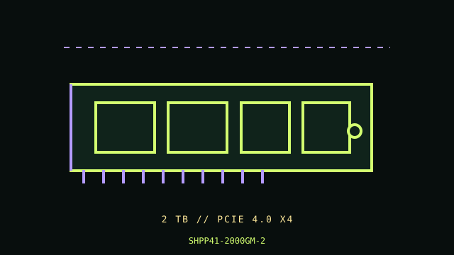

[ PCIE 4.0 NVME // IDENTIFIED PRODUCT ]
SK hynix Platinum P41 2 TB (SHPP41-2000GM-2)
Product-specific catalog record for the manufacturer code below. Performance figures are manufacturer-rated values, not independent test results.

IDENTIFY THE EXACT SKU: Compare the full MPN, label suffix, form factor, firmware and any OEM/security code before applying these notes. Family variations, capacity changes and factory thermal assemblies can materially change ratings and compatibility.
Manufacturer-identified specifications
| Product / MPN | SK hynix Platinum P41 2 TB (SHPP41-2000GM-2) — SHPP41-2000GM-2 |
|---|---|
| Capacity / form factor | 2 TB; M.2 2280, single-sided bare module. |
| Interface / lane width | PCIe 4.0 x4. |
| Protocol | NVMe 1.4. |
| Rated performance / endurance | Up to 7,000 MB/s sequential read and 6,500 MB/s sequential write; 1,200 TBW for the 2 TB SKU. |
| Heatsink / revision caveat | Bare single-sided module; no heatsink included with the bare SKU. Confirm any laptop shield or desktop M.2 cover clearance and pad contact. Capacity-specific ratings for the 2 TB Platinum P41 should not be transferred to the P41 Plus or other SK hynix families. A host with Gen4 x4 lanes is required for peak interface performance; boot support is motherboard/UEFI dependent. |
Compatibility, installation & service
- Consult the system M.2 manual for PCIe/NVMe support, length, single-sided clearance, lane sharing and UEFI boot. Use board cooling only as designed and maintain airflow under sustained loads. Before service, save a verified backup, record firmware and SMART health, and use SK hynix’s current support utility/instructions for this product.
- Capacity-specific ratings for the 2 TB Platinum P41 should not be transferred to the P41 Plus or other SK hynix families. A host with Gen4 x4 lanes is required for peak interface performance; boot support is motherboard/UEFI dependent.
- Confirm host boot mode, OS NVMe support, CPU lane generation, socket length/keying, power and controller/backplane qualification from the system manual; physical fit alone does not establish compatibility.
- Before drive replacement, check backup integrity, encryption keys, firmware settings, recovery media and array rebuild plans. Use electrostatic-discharge precautions and never hot-remove unless the host documentation explicitly supports it.
Manufacturer references
- SK hynix Platinum P41 — manufacturer product page and support downloadsManufacturer specification/product reference. Verify the precise SKU and its capacity-specific table, manual or linked downloads against the installed drive label.
- NVM Express — specificationsProtocol standards reference; it does not establish product-specific features or host boot support.
- PCI-SIG — PCI Express specificationsInterface generation/lanes standards reference, not a substitute for the host motherboard/server manual.
Manufacturer peak ratings reflect stated test conditions and may not represent sustained writes in a thermally constrained or cache-exhausted host. Confirm current regional support, service status and warranty terms before use.